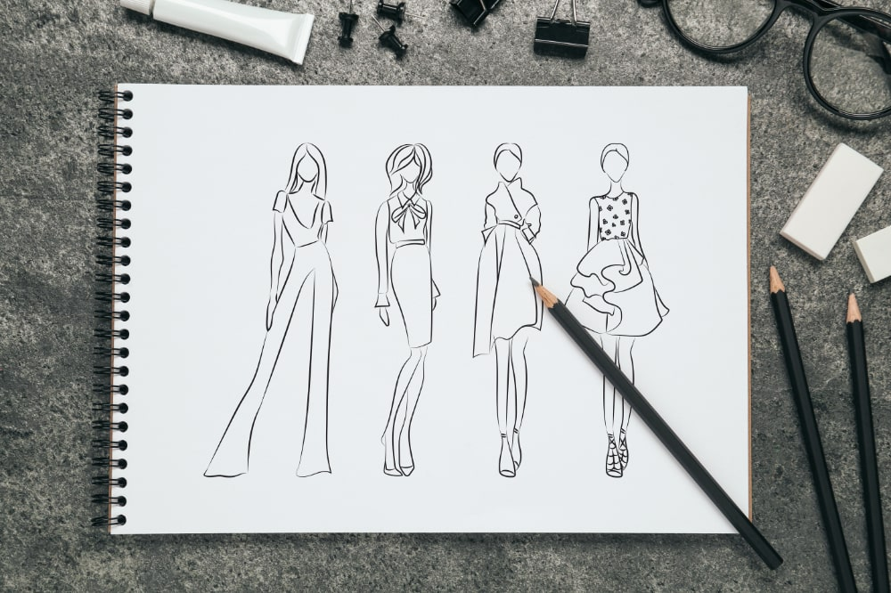
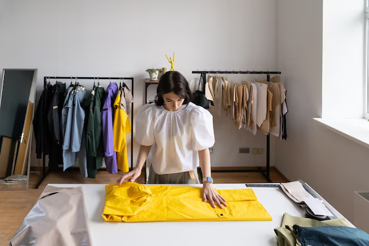

Entre em uma jornada fascinante que abrange uma ampla gama de conceitos fundamentais, desde a compreensão dos materiais têxteis até as tendências de moda e a produção de vestuário.
A Têxtil, Moda e Vestuário é uma área que envolve o estudo, a criação e a produção de tecidos, roupas e acessórios, englobando design, tendências e toda a cadeia de produção de vestuário. Ela une aspectos criativos e tecnológicos, com foco na inovação de materiais e estilos, atendendo tanto a necessidades estéticas quanto funcionais.
A importância dessa área está na sua capacidade de impactar a economia global, gerar empregos e promover a cultura e a identidade de diferentes povos. Além disso, ela enfrenta desafios relacionados à sustentabilidade e às condições de trabalho, o que tem impulsionado a busca por práticas mais éticas e ambientalmente responsáveis.
Tecido natural é feito a partir de fibras provenientes da natureza, como algodão, lã e linho, sendo mais respiráveis e ecológicos. Já os tecidos sintéticos, como poliéster e nylon, são criados a partir de derivados do petróleo e têm mais durabilidade e resistência, mas são menos biodegradáveis e impactam mais o meio ambiente.
O tweed é um tecido de lã, originário da Escócia, conhecido por sua textura espessa e padrões como xadrez. Usado em roupas como jaquetas e blazers, é ideal para climas frios e combina resistência com um estilo clássico e sofisticado, sendo uma escolha atemporal na moda.
Já tinha ouvido falar sobre têxtil, moda e vestuário antes, ou é um tema novo para você? quer ampliar seu conhecimento? Venha para nossos serviços da “CLTreino”.